Vehicles I’ve owned
1976 Jeep CJ5
~1984 to late 1987
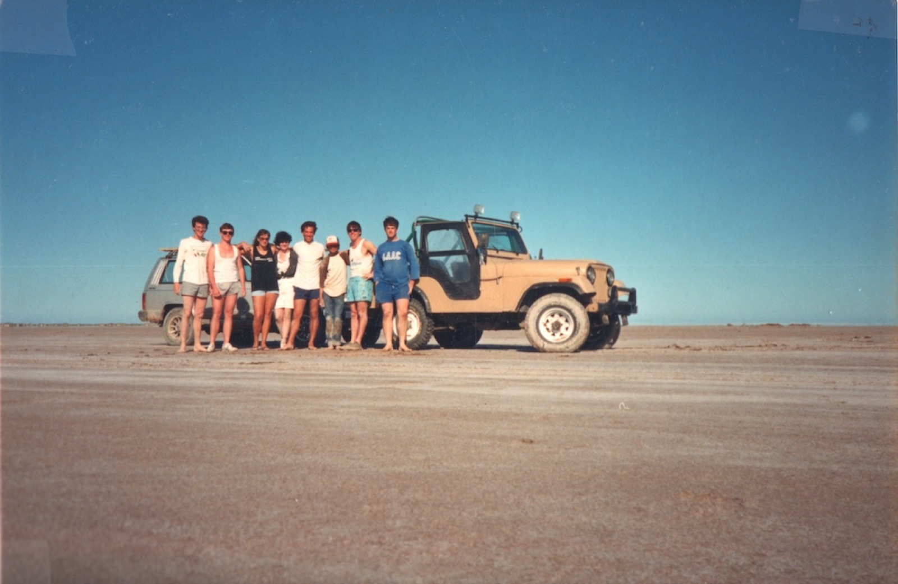
I found the Jeep in the El Centro newspaper. I wasn’t looking for a car. Dad helped with the money but made me negotiate myself. First lesson in vehicle ownership. I put a back seat in, got a bikini top for the summer, added a roll cage, replaced the gas tank, repainted the whole thing with rattle cans in the driveway. The windshield wipers didn’t always work so I had a Vice-Grip to turn them with. Drove it from El Centro to Claremont constantly, and to San Felipe several times.
1984 Isuzu Trooper
by Aug 1987; sold before March 1990
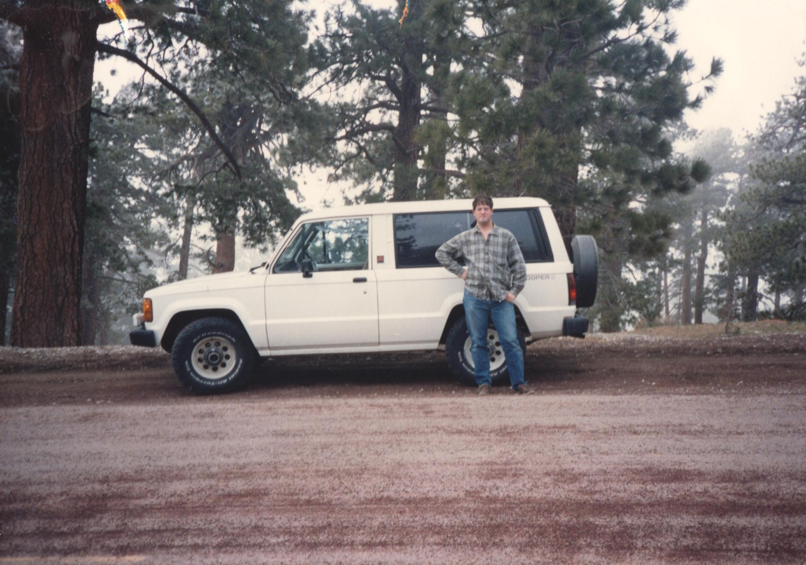
I got the Trooper because my parents thought the Jeep was unsafe. They were probably right. It was a two-door. Had a little four-cylinder engine that kept it pretty slow. I drove it all over LA and took it offroad a few times. I did take it skiing. There weren’t any great adventures. I sold the Trooper when I got the Amigo.
1970 Land Rover IIA 88" “RHINOTF”
by May 1988 to late 1998
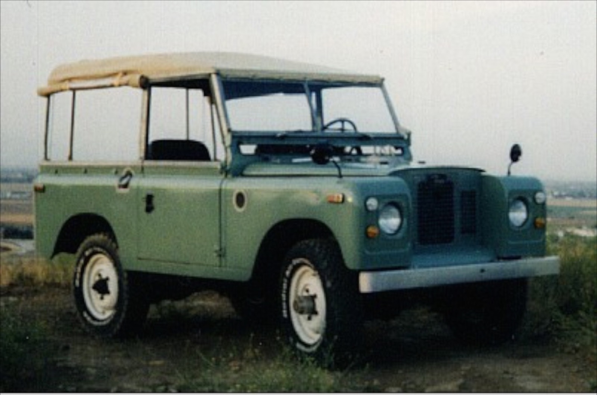
I was a senior in college when I bought the 88. The Auto Trader had it for $1,400. No roof, no back seat, paint in poor condition, and the 3rd gear syncro was broken. The name was RHINOTF, from the “Rhino Tough” ad campaign. The result was an old Land Rover that was too pretty to drive offroad, which is what they’re meant for. I sold it to a consignment place for around $10,000, less than restoration costs, and I was relieved to be done with it.
1984 Range Rover
1990 to ~1999 (rolled over April 1991)
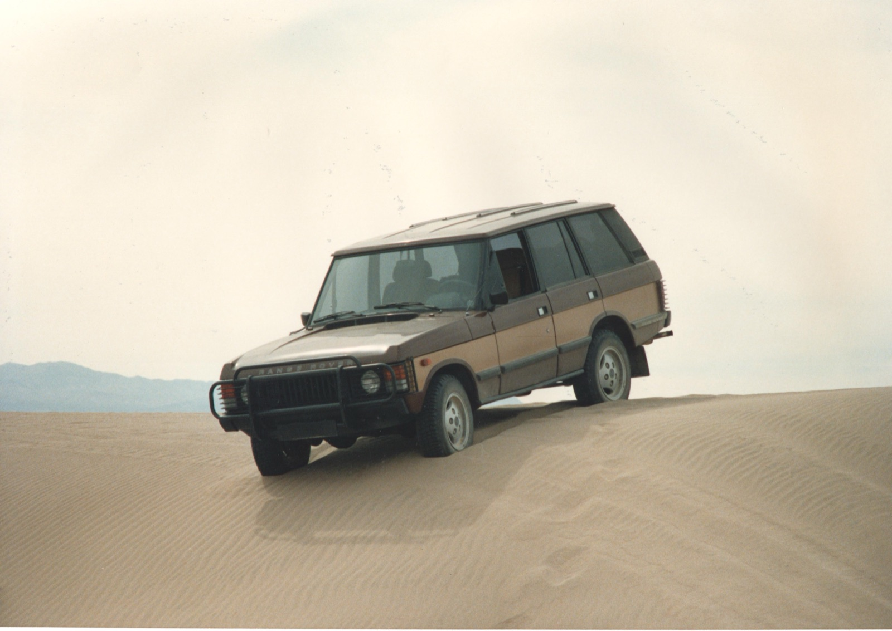
I bought it on a whim from a dealer in LA, browsing auto ads but not shopping. I rolled it on a dirt road in the dark. I rolled it back upright, drove it home, cut the roof off, and had a roll cage professionally welded in. Then I drove it from Denver to Moab. Then it threw a piston through the bottom of the engine on I-70 between Green River and Salina. If you turn a car upside down, blow out the cylinders before you start it. Oil leaks down into them.
1965 Land Rover IIA 109" Station Wagon “Kung San”
by March 1990 to ~1994-96
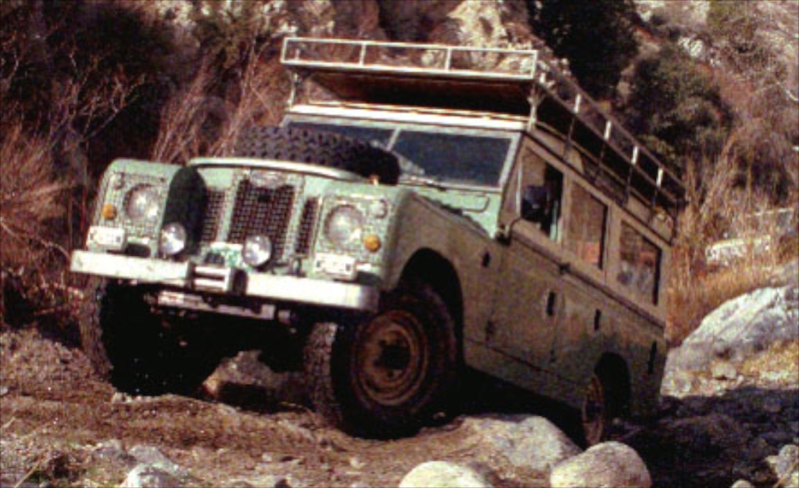
It had been restored before I bought it. It had a Chevy 6 engine swapped in, which was probably the worst part of it. I named it Kung San after the native tribespeople of the Kalahari, which is also the name from The Gods Must Be Crazy. It appeared in a Four Wheeler Magazine article. I have a framed copy. I had the Amigo at the same time.
1976 MG Midget
~1990
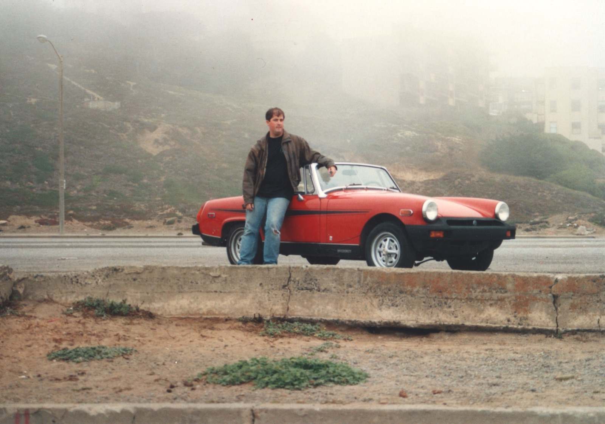
1976 was peak automotive malaise. I drove it from San Francisco to Los Angeles and back. It overheated at the Grapevine. I waited at the top for it to cool down. The downhill speed was 55mph. The uphill speed was aspirational. The MG made it. Both directions.
1994 Isuzu Amigo
~1993/94 to Nov 1994 (sold when I bought the Audi)
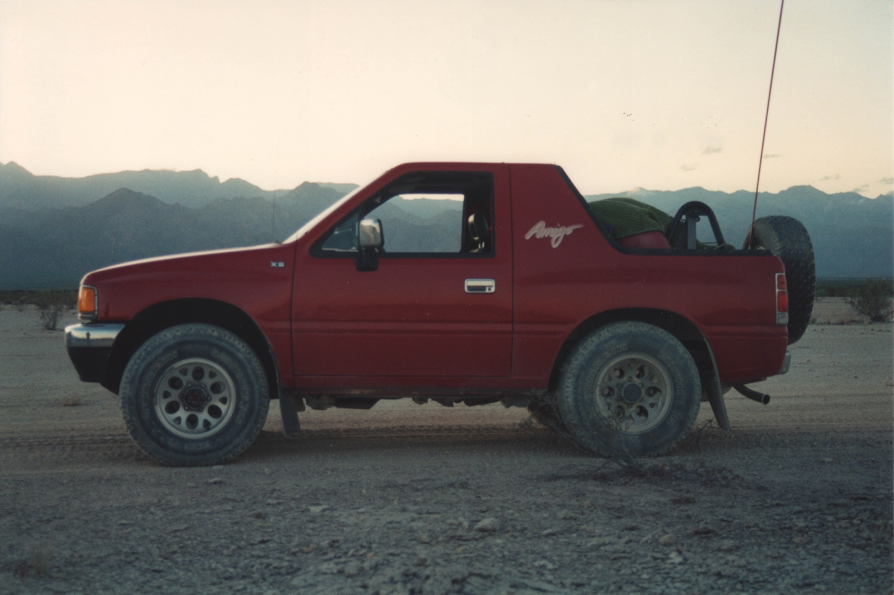
I had this when I lived in Pasadena. The rear soft top came off, making it semi-convertible, which I liked. More than a few small adventures: drove it down to Baja to the Matomi Wash checkpoint; up to Seattle and back for a computer convention; skiing in Utah; dry lake camping with Guinness and oysters. I sold it when I bought the Audi.
196x Land Rover IIA 109" Pickup
acquired ~6/1994
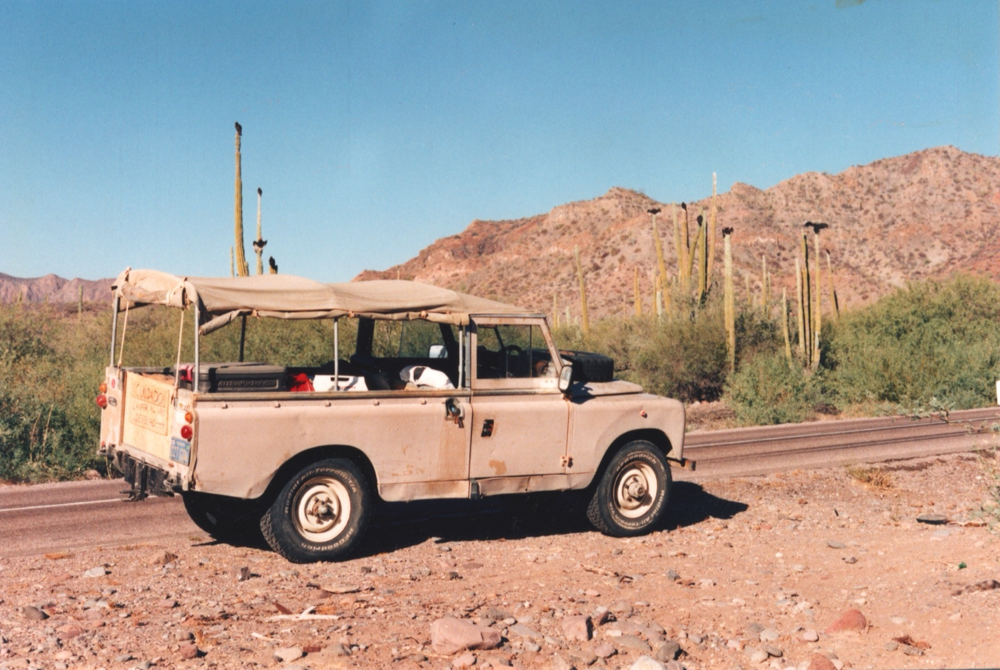
It came from South Africa by way of Costa Rica. I bought it from a military guy in Port Hueneme. It had a crack in the block that had been mended with green goop. Drove it from San Diego to Los Cabos and back, over a thousand miles through Baja California, and called it “a walk in the park.” I eventually gave it to Lawrence Quiroz from British Pacific, the Land Rover shop in old Pasadena that had supported my habit for years.
1990 Audi 90 Quattro 20V
Nov 1994 to June 1999
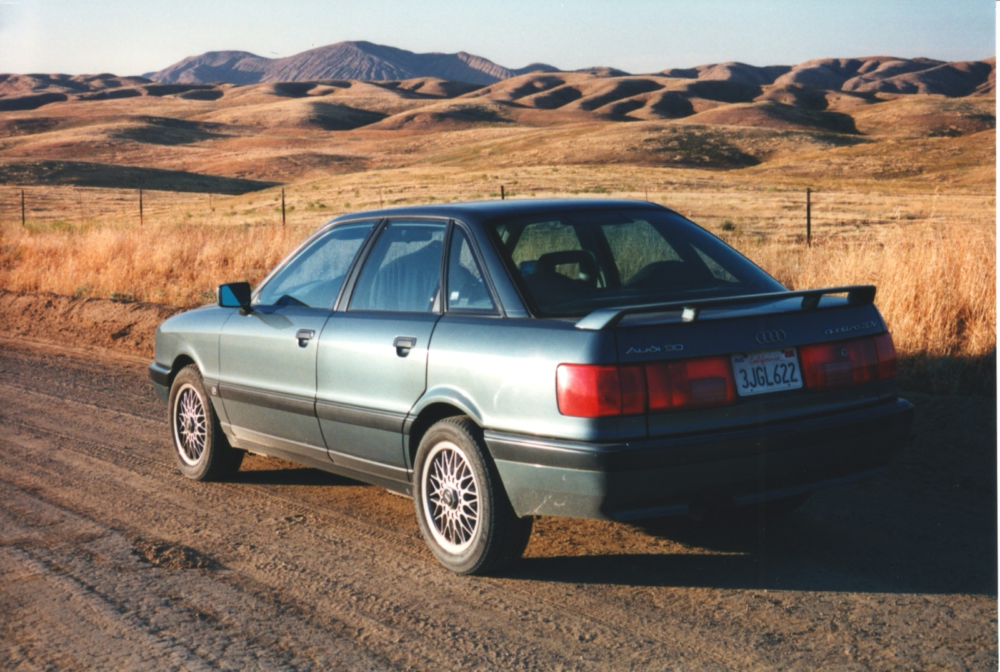
I bought it on a whim after seeing it in the parking lot of a sushi restaurant with a for-sale sign. It cornered like crazy. It was genuinely fun to drive. I’m not really into the gofast, though, and eventually I wanted something different. I traded it, along with the motorcycle, for the first Discovery. The Audi was a better car than either of the Discoveries.
199x Honda CBR600F3
199x to June 1999 (traded with the Audi for the first Discovery)
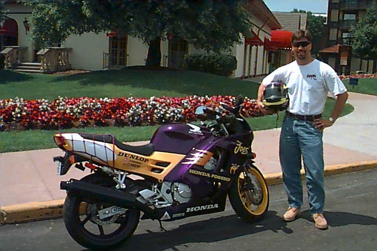
Not my bike and not me: another Honda CBR600F3, similar but with a different paint scheme.
I hit 160mph on it once or twice. The problems: too hot. Too cold. Too scared of traffic. And the possibility of doing something really stupid was always very close to the surface. I got rid of it before wisdom failed completely. Traded it along with the Audi for the first Discovery.
1972 Steyr-Puch Pinzgauer 710M
Jan 1999 to Oct 2010
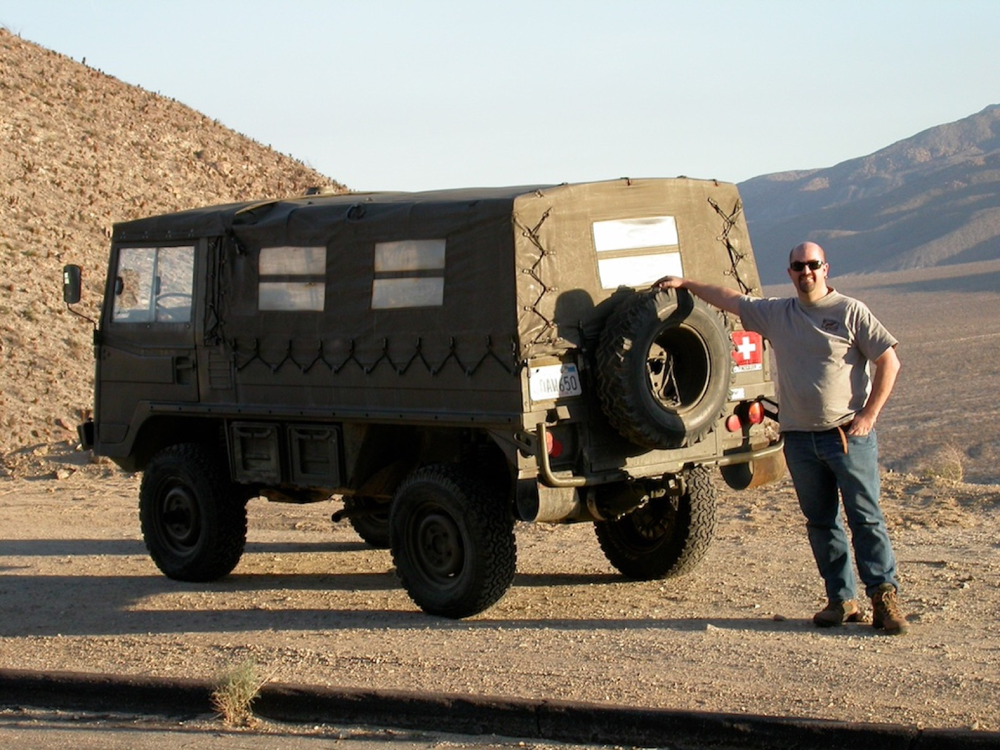
The Pinzgauer is an Austrian military utility vehicle with a backbone chassis, portal axles for serious ground clearance, and an air-cooled engine. It went to Burning Man multiple times. I sold both the Pinzgauer and the Haflinger when I was buying a house and needed a down payment. Both have since approximately doubled in value. The house has also doubled. So the trade worked out, mathematically. I’m at peace with it.
1998 Land Rover Discovery
June 1999 to ~April 2006
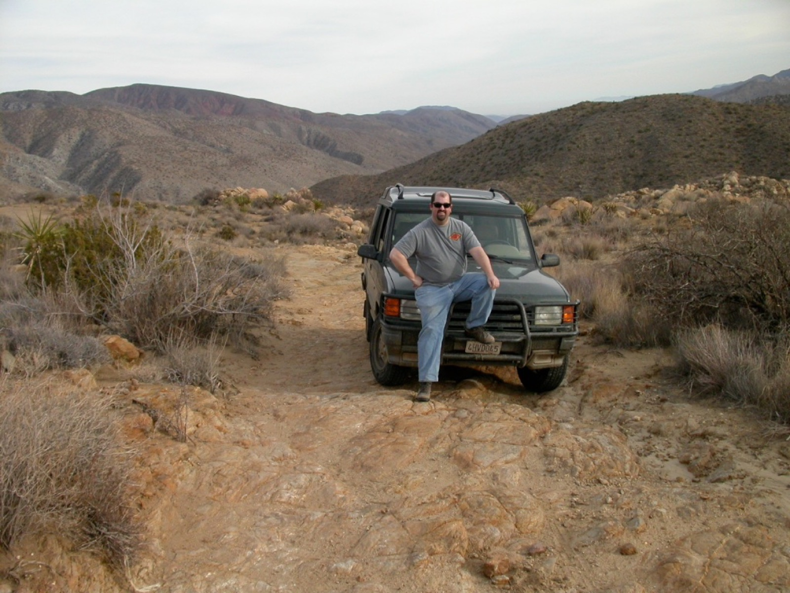
I traded the Audi and my motorcycle for it at Land Rover of Mission Viejo. Kind of on a whim. The Audi was still fine and fun to drive but just too small. I probably lost money four ways on that transaction, and I’m not even sure how much. It kept the Rover specialty mechanic in business for a while.
1963 Steyr-Puch Haflinger
by 2006 to June 2010
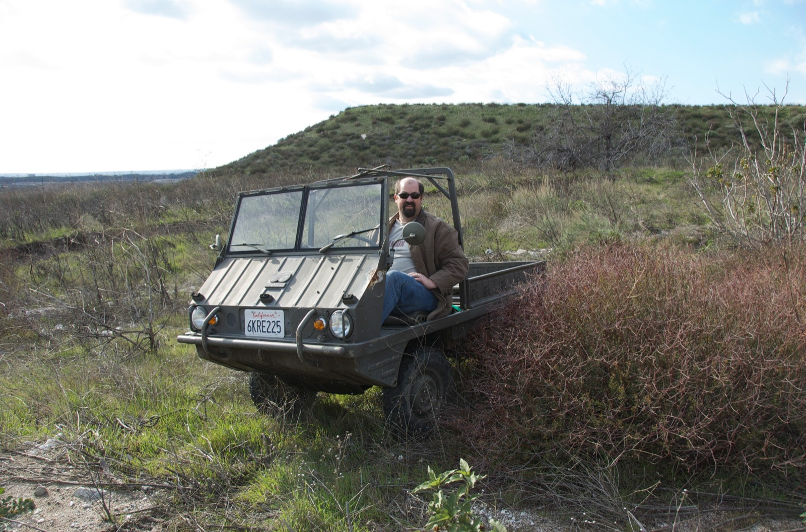
If you own a Pinzgauer and think “you know what this needs,” you get a Haflinger. It was street legal but terrifying at 40mph. I barely drove it. I sold it with the Pinzgauer for house down payment money. I really should have kept it. It’s the one I think about.
2002 Land Rover Discovery 2 Borrego Edition
2006 to ~late 2013
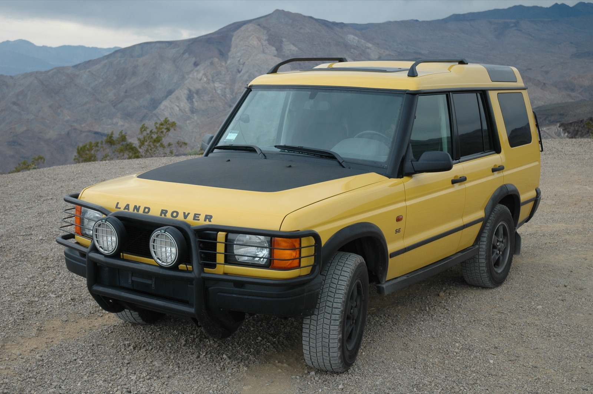
The D2 had 35,870 miles when I bought it from a Land Rover dealer in Mission Viejo. I drove it 92,000 more. Discovery 2s have a reputation for catastrophic failure. Mine didn’t have one. For a Land Rover, this counts as beating the odds. I still say “never again.” (I’d set out to buy an FJ Cruiser, and asked for my deposit back.)
1987 VW Vanagon Westfalia
from ~June-July 2004
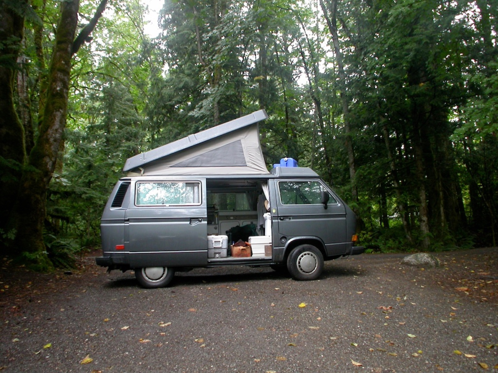
I bought it for one trip: Los Angeles, up the coast to Washington, across to Idaho, back to Burning Man, back home. I liked it. I kept it for a while. It lived at Pamarie’s house for a while. Ended up letting it go. If the Vanagon had had working air conditioning, I might have happily kept it.
2011 Subaru Forester
June 2013 to ~May 2021
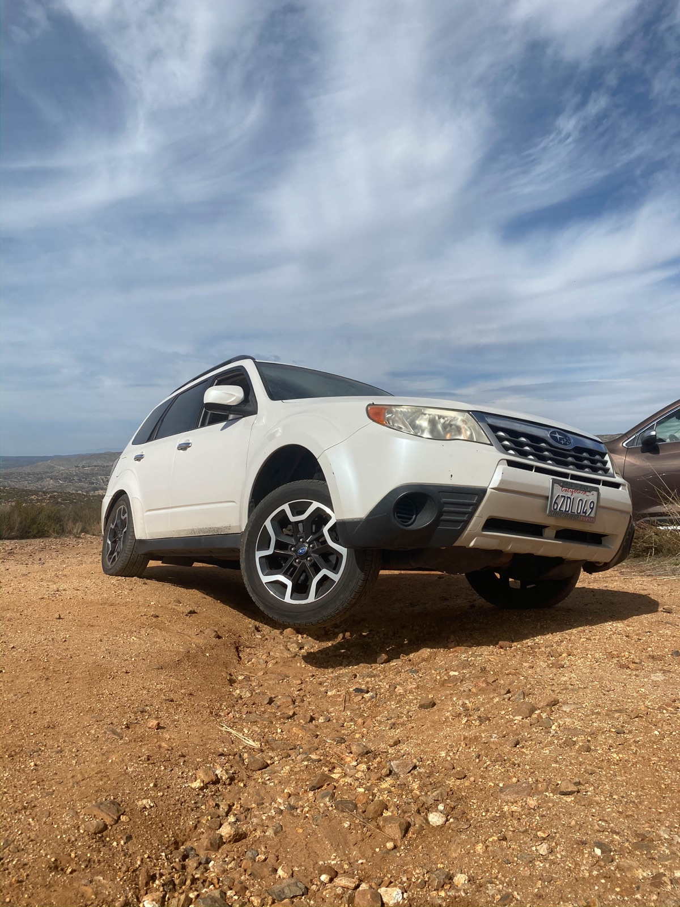
I had a son, a mortgage, and a Discovery with 175,000 miles. Time to be responsible. I got the manual transmission. That was the last stand of independence. It was practical. AWD, good cargo room, 23 MPG. I towed trailers with it. At 125,000 miles it needed a new engine and transmission. $8,746. It was still the most economical vehicle I’ve owned.
2010 Lexus GX460
April 2021 to now (for sale)
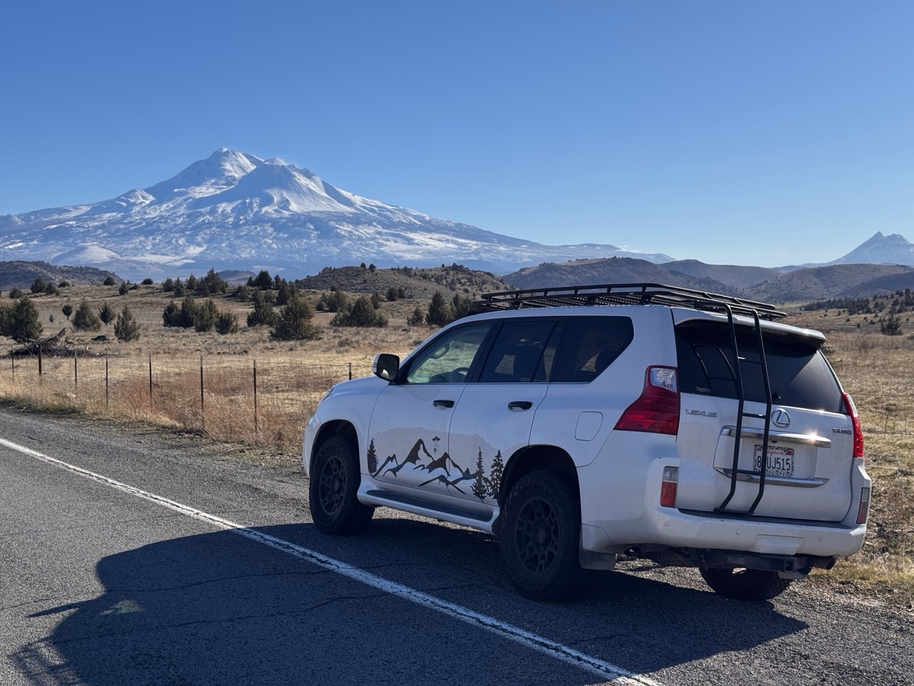
I bought it from Shift, an online used car retailer, during Covid. Three previous owners, eleven years old, 136,000 miles. After Series Land Rovers, twin Solex carbs, a rolled Range Rover, and a Pinzgauer through multiple Burning Mans, worrying about a Toyota-engineered V8 with fuel injection seems quaint. Practically a spaceship by comparison.
© 2026 Fred Heald